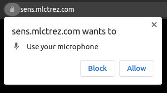

Warning: Those with Photosensitive Epilepsy (PSE) should not view this site under any
circumstances.
The site operator assumes no legal liability for injury caused to persons with PSE that have ignored this
warning.
Click this text acknowledge the warning after reading the instructions below.
Instructions
The visualization works best with at least a 1920x1200 resolution.
Allow the browser to access your microphone to visualize the music.

Until the ambient noise filtering has been applied, the visualization will look a bit off.
Click filter ambient noise to capture the background ambient noise floor. This should be done when no music or noise is present.
The capture will begin 0.5 seconds later to to avoid picking up keyboard or mouse noise.
The capture will be complete when the dots reach the top of the screen.
The noise floor is saved in the browser local storage and will be reused when if available.
Start up the music and enjoy!
Use the demo audio link for a demo. Reload the page to reset.
Inspired by 𝕃𝕚𝕩𝕚𝕖 𝕃𝕒𝕓𝕤 SENSORY BRIDGE.
--- maybe some future enhancements? ---
More visualization modes like sensory bridge.
Tunable photons / boost / mood like sensory bridge.
Horizontal and mobile view(s)?